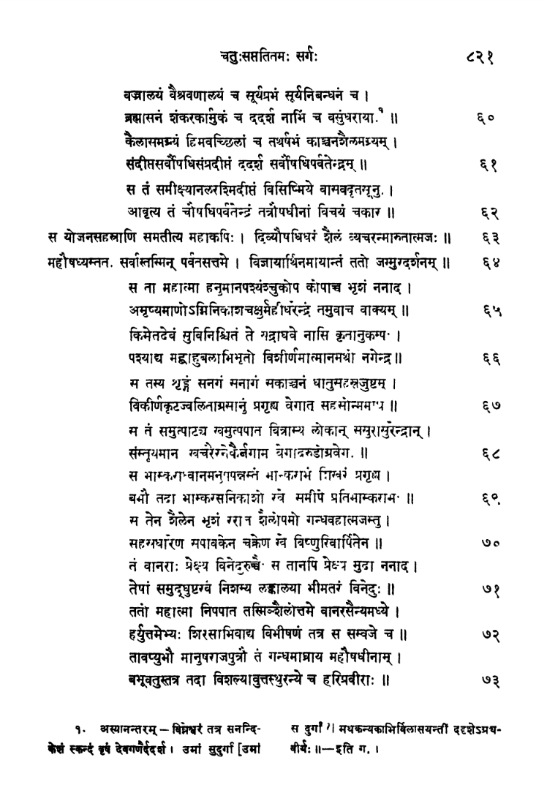
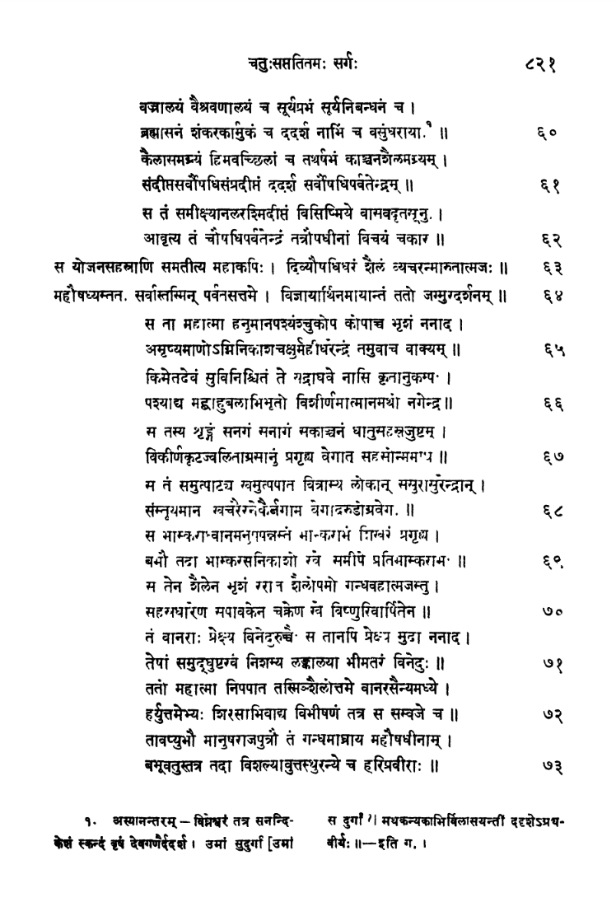
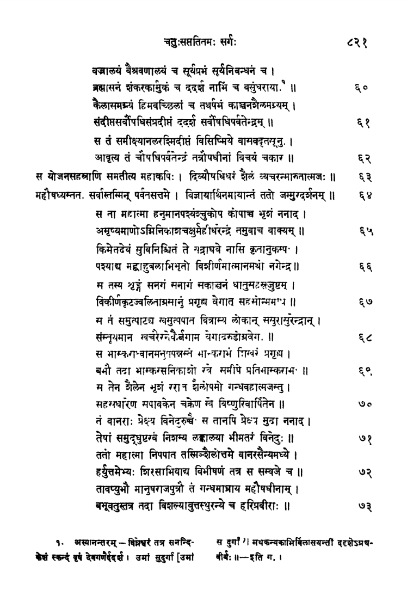

This website explores the biodiversity of India through the lens of the mythical quest for
Sanjeevani Booti. Through literary analysis, history, anthropology, and scientific
research, it aims to uncover indigenous knowledge and advocate for interdisciplinary
approaches to biodiversity conservation.
वैदेही हरणं जातं जटायु मरणं महत्।
एतद्विद्याति लोकं जीवनं सम्पद्यते च यः॥
This verse from the Ramayana encapsulates the central themes of struggle, healing, and the pursuit of life-saving remedies. The verse signifies that one who understands the abduction of Sita and the death of Jatayu truly comprehends life and achieves prosperity. It serves as a reminder of the challenges we face, the sacrifices made, and the eternal quest for restoration and rejuvenation, echoing the essence of the quest for the Sanjeevani Booti.
As we embark on this expedition, guided by the principles of ecocritical inquiry, we invite you to join us in exploring the multifaceted layers of meaning embedded within the legend of the Sanjeevani Booti. Together, let us unravel the intricate tapestry of ecological narratives that converge at the intersection of myth and reality, forging a deeper understanding of our place within the intricate web of life.
The Search
SANJEEVANI is one of the most enigmatic and highly coveted herbs in Indian mythology, shrouded in deep controversy regarding its existence and true identity. Its legendary power lies in its supposed ability to revive life, yet pinpointing a specific plant species that could be considered Sanjeevani has proven exceedingly challenging. Despite its elusive nature, the herb has been a topic of intense scrutiny for centuries. Recently, there has been a revived enthusiasm for uncovering its true identity, driven by the growing recognition of the untapped value of biological resources within any nation. The government of Uttarakhand in 2016 had chalked out the plan to search for the mythical herb in the Dronagiri mountains of Chamoli district.
Whether or not Sanjeevani exists needs to be examined irrespective of whether or not the Ramayana is a fact of history or a figment of imagination. For several reasons: first, Sanjeevani as a concept is deeply rooted in traditional Indian medicine. Secondly, as a herb that can resurrect life, Sanjeevani is not only limited to Ramayana but also figures in other mythological stories such as the story of ‘Yayathi’ and thus seems to have a broad cultural base. Thirdly, given its high potential value, it is worth probing lest we miss out on a potentially important biological resource and also about preserving it.
K. N. Ganeshaiah, R. Vasudeva and R. Uma Shaanker in their paper ‘In search of Sanjeevani’ has proposed that the process of evaluating the existence of Sanjeevani shall follow a logical process of elimination of the following alternate possibilities.
1. It refers to a specific plant, either extinct or extant, with a strong potential for resurrecting life.
2. It is merely a conceptual term referring to a specific group of plants with a potential for invigorating the dying health.
3. It is a metaphoric term for any plant(s) with a good medicinal value.
4. It is simply an imaginary plant that never existed.
The conclusion that Sanjeevani is a mere imaginary plant can only be made after the first three possibilities are objectively disproved.
“The spirit of science shall be to capture these possibilities, however meagre they could be, than to wrongly assume that all things unknown to science do not stand a chance.” (K.N.Ganeshaiah, 2009)
The Criteria
Due to the numerous retellings and translations of the epic Ramayana across different languages and cultures, it's natural that there exist multiple versions with varying details, including those concerning Sanjeevani. However, despite these variations, certain fundamental elements remain consistent across most versions. During the war, Lakshmana, Rama’s brother, sustained a serious injury from an arrow, rendering him unconscious-a state interpreted as akin to death. Reviving him required a specific herb called Sanjeevani (literally meaning something that offers life; jeeva = life) which was believed to be available in India. Consequently, Hanuman was tasked with retrieving this herb and flew to a mountain range, sometimes referred to as Sanjeevani Parvatha. However, he couldn't pinpoint the exact plant and instead gathered a large assortment of all plants resembling the intended herb, which he then brought back to Lanka.
Based on the details provided in the epic, we can establish several criteria for identifying the candidate herb:
1. The plant must have been referred to in different languages in India with terms similar to/close to Sanjeevani.
2. The plant must have a Mountainous Habitat.
3. It should be a medicinal plant.
4. The plant must have medicinal properties associated with healing or reviving.
This criteria begins by considering a wide range of plants that meet basic criteria, then gradually narrows down the selection through increasingly stringent filters, ultimately leading to the identification of the most promising candidates.
Sanjeevani in Different Languages
The description of the mythical herb "Sanjeevani" in ancient puranic texts is not detailed enough to facilitate its scientific identification and study. As a result, the existence of the herb lacks scientific proof and remains mysterious. Over the centuries, herbalists and researchers have engaged in serious discussions and futile searches for this herb. Several plants in different languages and dialects of India (Natesh 2006; Uma Shaanker et al. 2006; Ganeshaiah et al. 2009) share the colloquial name "Sanjeevani" and are claimed to possess its legendary properties.
Jeeva Sampada (meaning wealth of bioresources), a database on Indian bioresources comprising of 8,200,00 records for over 39,000 species containing a library of the common names of most Indian plants, in about 80 different languages and dialects, was used to search term ‘Sanjeevani’ and its synonyms (words with similar meaning) or phononyms (words sounding phonetically similar) in Sanskrit in particular and in other languages as well.
A preliminary list of about 17 species was arrived at after searching the database. However, there is no consensus on a single plant species, and the search for the true Sanjeevani continues. Among the plants associated with the name "Sanjeevani," such as Cressa cretica L., Selaginella bryopteris (L.) Bak., Desmotricum fimbriatum Bl., Malaxis acuminata D. Don, Malaxis wallichii (Lindl.) Deb., Microstylis wallichii Lindl., Trichopus zeylanicus Gaertn., and Terminalia chebula Retz., many researchers consider S. bryopteris as the most likely candidate (Pandey et al. 1999; Sah et al. 2005; Mishra 2011; Singh and Singh 2015; Paswan et al. 2017; Gautam et al. 2023).
The three species, viz. C. cretica, S. bryopteris and D. fimbriatum were considered as focal species for the next steps of analysis as the term Sanjeevani is frequently and consistently referenced
Habitat
In all versions of the epic, Hanuman consistently searched for the plant in mountainous regions. Therefore, if the herb indeed exists, it is likely to be found along mountain ranges. Among the three species selected based on their references in Indian languages, C. cretica may not be a viable candidate as it predominantly occurs in dry tracts, particularly the Deccan Plateau, rather than along mountain ranges. Hence, S. bryopteris and D. fimbriatum emerge as the more plausible candidates.
D. fimbriatums. bryopteris
Medical Properties
From the epic of Ramayana, it can be said that the plant known as Sanjeevani in various languages in India grows at high altitudes and is renowned for its extraordinary medicinal properties. It is revered for its potent ability to revive or rejuvenate life. Sanjeevani is said to emit light, exhibiting bioluminescence. The plant's fragrant aroma is believed to be associated with the presence of bioflavonoids.
D. fimbriatum
Traditional uses of Dendrobium plants for treating dermatological disorders in different countries:
Latin Name
Country
Local name
Tradtional Use
Dendrobium affine Steudel.
Australia
Marndaja, tjalamarinj
The sap from the pseudobulbs is directly squeezed onto sores to relieve itchy skin
Fluid from the stem or bulb is used on skin to treat itching, cuts, sores and minor burns
Dendrobium alpestre Royle
India
Jiwanti
For treating pimples, boils and other skin eruptions
Dendrobium amoenum Wall. ex Lindl
India, Nepal
Mitha alu,
Thuur
Leaves of D. amoenum pounded with Hedychium wardii C.E.C. Fisch. rhizomes are made into a paste, which is used to treat wounds and various skin diseases
Dendrobium aphyllum (Roxb.) C.E.C. Fisch
Bangladesh, China
Dou chun shi hu
A paste or juice of the leaves is used to treat wounds
Whole plants are used to treat burns and scalds. Fresh stems are externally used to tread burns and scalds
Dendrobium denneanum Kerr [syn. Dendrobium aurantiacum var. denneanum (Kerr) Z.H.Tsi]
China
Die qiao shi hu
Stems are used to treat impetigo. Dry leaves are externally used to treat impetigo
Dendrobium canaliculatum R. Br
Australia
Marndaja
Pseudobulbs are squeezed, and the sap is applied directly to sores to help heal them
Dendrobium chrysanthum Wall. ex Lindl
India
Nauawimu
Stem juice is applied on wounds and sores
Dendrobium discolor Lindl
Australia
A poultice is prepared from young canes to draw a boil. A liniment made from mature canes is used to treat ringworm
Dendrobium fimbriatum Hook
India
Mokya tu
Approximately 10 g of leaves are ground, made into a paste and applied twice a day for 10 days to heal cuts and wounds
Dendrobium hancockii Rolfe
China
Xi ye shi hu
Ulcers
Dendrobium herbaceum Lindl
India
Agai
Fresh roots are burnt, and 10 g of the resultant ash is mixed with 10 ml mustard oil and applied on affected skin 2 to 3 times daily for several days until symptoms disappear
One spoonful of a root paste along with 1 g of a seed powder of black pepper is administered orally on an empty stomach twice a day for 21 days to cure diseases, including skin allergies, and is applied on the affected part of skin to cure eczema
Dendrobium nobile Lindl
Bangladesh, India
A leaf extract is made and is very effective for treating freshly cut wounds. A seed powder is used to cure cuts and wounds.
Powdery seeds are applied to fresh wounds for quick healing.
Whole plant parts are used in the treatment of cuts and wounds.
Wang YH. Traditional Uses and Pharmacologically Active Constituents of Dendrobium Plants for Dermatological Disorders: A Review.
s. Bryopteris
With a common name as spike moss, Selaginella bryopteris is a perennial herbaceous poikilohydric lithophyte that grows on the hills of tropical areas, particularly the Arawali mountain terrains from east to west in India. It is commonly sold in pilgrimage destinations of various regions of India. During summer the plants undergo extreme desiccation. The fronds curl, become dry and are virtually dead. In this condition, they look like a closed fist hence often known in Unani as ‘punjemariam’ or ‘hathazori’. The dry plants when left in water unfold their fronds, turn green and come back to active life. it is found in Uttaranchal, Uttar Pradesh, Madhya Pradesh, Chhattisgarh, Bihar, Odisha, Maharashtra, Tamil Nadu (Saxena and Brahmam 1996).
Medicinal Uses:
S. bryopteris has been traditionally used for various medicinal purposes, including alleviating discomfort associated with hot waves and burning sensation during urination, restoring normal menstrual cycles and aiding in easy delivery when applied externally to pregnant women and providing treatment for jaundice (Shah et al. 2005).
It is also useful for the treatment of liver and epilepsy-related conditions, diabetes inflammation and wound healing (Shankar and Devalla 2012; Gautam et al. 2023).
The herb is a key ingredient to treat various conditions such as spermatorrhoea, gonorrhea, venereal diseases, constipation, colitis, and indigestion (Kholia and Punetha 2005; Singh and Singh 2012; Singh et al. 2013).
In Madhya Pradesh, the herb is traditionally used by Gond tribes as a strength tonic. They prepare a fresh paste of young leaves and combine it with sugar or honey to treat stomach aches and urinary tract inflammation in children (Singh et al. 2007).
In Chhattisgarh's Bastar district, women utilize the dried powder of this herb to address gynecological issues like menstrual irregularities, leucorrhoea, and childbirth discomfort (Singh and Singh 2014).
In Songhati and Sonbhadra regions of Uttar Pradesh, the native population consumes a paste made from the herb along with cow's milk for treating beri-beri, dysentery, and rejuvenation (Singh et al. 2002).
Some tribal communities use the herb in combination with tobacco for hallucinogenic purposes (Dixit 1984; Singh et al. 1989).
According to Sah et al. (2005), extracts of S. bryopteris have been found to aid in the recovery of rat and insect cells exposed to UV radiation and oxidative stress caused by H2O2. This suggests potential implications for preventing neurodegeneration since oxidative stress has been associated with neural disorders (Pandey et al. 1999; Kasera et al. 2003; Nedeljkovic et al. 2003; Stocker and Keaney 2004). Although the herb shows promise in cell recovery, there is currently no evidence supporting its potential to revive patients from a coma or unconscious state.
S. bryopteris is commonly used to treat heat strokes, providing relief for individuals working in high temperatures, especially in tropical regions during the summer (Sah 2008).
Epidemiological studies indicate that including a diverse range of flavonoids in one's diet can reduce the risk of developing Parkinson's disease, particularly in males. Additionally, research suggests that incorporating flavonoids into one's cuisine may contribute to a lower incidence of cancer and cardiovascular disease (Gao et al. 2003; Chandran 2014).
S. bryopteris has shown anticarcinogenic effects against lung and skin papilloma and also reveals anti-inflammatory properties for treating skin disorders (Mishra et al. 2011; Paswan et al. 2017).
Recently, Pal et al. (2022) stated that S. bryopteris extract (SBE) induces apoptosis in liver cancer cells (HepG2) by affecting mitochondrial membrane potential, nuclear condensation, and reactive oxygen species production.
The efficacy of SBE (S. bryopteris extract) against Hepatocellular carcinoma (HCC) is substantiated by the increased expression of pro-apoptotic genes (p53, caspase-3, caspase-9, Bax) and decreased expression of the anti-apoptotic gene (Bcl-2) in liver tissue, as revealed through qRT-PCR analysis (Pal et al. 2022).
Singh et al. (2017) stated that S. bryopteris water extract, when added to the freezing medium along with Me2SO, significantly increased the levels of Hsp70 and Hsp90 in cryopreserved MSCs compared to non-cryopreserved MSCs. This suggests that the extract enhances the stability and function of cryopreserved Human Umbilical Cord Blood-derived MSCs (Mesenchymal stem cells).
Medicinal Properties Associated with Healing or Reviving
The traditional narrative depicts Sanjeevani as having "resurrected" Lakshmana from a state akin to death. However, this interpretation of the herb's ability to revive life from death itself can be understood in various ways. It is unlikely that there was any herb potentially capable of resurrecting a dead Lakshmana, back to life. It's more plausible to consider that Lakshmana was in a state resembling death but not actually deceased. This interpretation suggests that Sanjeevani may have had the ability to restore consciousness or vitality rather than literal resurrection from death.
One such state can be ‘Coma’. A coma is a prolonged state of unconsciousness. During a coma, a person is unresponsive to their environment. There are a number of cases where patients in coma, caused by severe injury or illness, revert to the conscious stage, as if the dead system switched back to life. A famous example is that of Sarah Scantin, who entered into a coma in 1984 following an accident when she was 18 years old and remained in that state for about 20 years. She suddenly came back to ‘life’ in 2005.
What causes coma is less understood, barring some physiological processes associated with it. However, it is believed that certain poisons or shocks can induce similar effects. Traditionally people bitten by poisonous snakes or scorpions are not allowed to go to sleep, lest they do not slip into such an unconscious stage that eventually leads to death.
It is probable that Lakshmana was in a state of unconsciousness or coma due to the effects of the arrow, such as heat shock or poison. In this context, Sanjeevani may have possessed properties capable of awakening or rejuvenating him, effectively "resurrecting" him from this state. The similarity between the symptoms of this coma-like state and actual death likely led storytellers to describe the herb as a "life-giver."
K. N. Ganeshaiah, R. Vasudeva and R. Uma Shaanker used the ‘doctrine of signature’, popularly known as the tenet ‘similar cures similar’ to select between the two candidates.
One of the strong tenets of the ancient Indian and other traditional systems of medicine was the principle of ‘similar cures similar’. Similar to the ‘Doctrine of Signature’, it essentially means that a plant with syndromes similar to the afflicted organ or disorder in question, can be effectively used to cure the disease in human patients. Therefore, they hypothesized that the so-called Sanjeevani had the ability of resurrecting itself from a state of near-death situation and hence the ancient doctors, on the principle of ‘similar cures similar’ used it to cure coma in Rama, Lakshmana and others.
Interestingly, there is a group of poikilohydric plants that exhibit remarkable resilience by seemingly coming back to life from nearly dead-dry conditions upon rehydration. These plants have garnered significant interest as potential sources of genes conferring drought tolerance and are the focus of intense study by crop physiologists, ecologists, and biochemists. This ability to revive from extreme dehydration parallels the concept of resurrection attributed to Sanjeevani in mythology, highlighting a potential scientific basis for such legendary properties.
S. bryopteris is a poikilohydric plant, and thus appears to possess the traits prescribed by the criteria we have set for searching Sanjeevani. It is a mountainous plant, referred to as Sanjeevani in Sanskrit and other local languages, has several medicinal values and exhibits an ability to resurrect itself from a stage of death, though its ability to cure coma is not recorded. Several of the medical properties such as the potential to promote recovery from shocks. Shah et al do point in the direction of the plant able to prevent neuro-degeneration.
Indeed, based on the criteria established for the search, it seems that there are at least two potential species—S. bryopteris and D. fimbriatum—that could represent Sanjeevani. These species merit further investigation and research to ascertain their potential as the mythical herb described in the epic narratives. By conducting more extensive studies on these species, we may gain valuable insights into their medicinal properties and their potential to fulfil the legendary attributes associated with Sanjeevani.
Wang, H. (2021). Traditional Uses and Pharmacologically Active Constituents of Dendrobium Plants for Dermatological Disorders: A Review. Natural Products and Bioprospecting, 11(5), 465. https://doi.org/10.1007/s13659-021-00305-0
Ramayana
In Hindu Mythology, Sanjeevani booti is a herb that is said to have reviving powers, this its name sanjeevani – meaning to give life/immortality, booti – meaning herb.
This mythical herb is first mentioned in Ramayana where Ravana’s son Indrajit hurls a weapon at Lakshmana and he is fatally wounded. To save Lakshmana , Hanuman is tasked to fetch the herb from the described mountain. When he reaches the described mountain he comes to find 4 similar herbs ; confused by this he cided to bring the whole mountain back with him.
Sarga 74 that states the location as well as the qualities of the sanjeevani booti

Sanjeevani booti is mentioned in the legend of Ramayana in the sarga 74 of yuddha kanda.
Given below is the translation from Shlok 29-34
गत्वा परममध्वानमुपर्युपरि सागरम् |
हिमवन्तं नगश्रेष्ठं हनूमन्गन्तुमर्हसि || ६-७४-२९
29. hanuumaan = O Hanuma!; arhasi = you ought; gantum = to go; himavantam = to Himalaya; nagashreShTham = the foremost of mountains; gatvaa = by traveling; uparyupari = higher and higher over; paramam = the large; saagaram = ocean.
"O Hanuma! You ought to go to Himalaya, the foremost of mountains, by traveling higher and higher over the large ocean."
ततः काञ्चनमत्युग्रमृषभं पर्वतोत्तमम् |
कैलासशिखरं चापि द्रक्ष्यस्यरिनिषूदन || ६-७४-३०
30. ariniShuudana = O annihilator of enemies!; tataH = thereupon; drakShyasi = you will see; tatra = there; R^iShabham = Mount Rishabha; parvatottamam = the excellent mountain; kailaasa shikharam = and the peak of Kailasa; kaaN^chanam = of golden hue; atyugram = and very much powerful.
"O annihilator of enemies! Thereafter, you will see there the Mount Rishabha, the excellent mountain and the very much powerful peak of Kailasa, with a golden hue."
31. viira = O valiant Hanuma!; madhye = in the midst; tayoH = of those; shikharayoH = two peaks; drakShyasi = you will see; pradiiptam = a blazing; atulaprabham = and unequally brilliant; oShadhiparvatam = herbal mountain; sarvauShadhiyutam = containing all kinds of herbs.
"O valiant Hanuma! In the midst of these two peaks, you will see a blazing and unequally brilliant herbal mountain, containing all kinds of herbs."
तस्य वानरशार्दूलचतस्रो मूर्ध्नि सम्भवाः |
द्रक्ष्यस्योषधयो दीप्ता दीपयन्त्यो दिशो दश || ६-७४-३२
32. vaanara shaarduula = O foremost of monkeys!; sambhavaaH = sprouted; tasya muurdhni = on the head of that mountain; chatusraH = are four; oShadhayaH = herbs; diiptaaH = which are blazing; drakShyasi = you can see; diiptayantiiH = them; illuminating; dashaH = the ten; dishaH = quarters.
"O foremost of monkeys! Sprouted on the head of that mountain, are four blazing herbs. You can see them, illuminating the ten quarters."
मृतसञ्जीवनीं चैव विशल्यकरणीम् अपि |
सौवर्णकरणीं चैव सन्धानीं च महौषधीम् || ६-७४-३३
33. mR^ita sanjivaniimchaiva = (you can see) Mrita sanjiivani (capable of restoring the dead to life) and also; vishalyakaraNiim api = Vishalyakarani (capable of extracting weapons and healing all wounds inflicted by weapons); suvarNakaraNiimchaiva = Suvarna karani (restoring the body to its original complexion); samdhaaniimcha = and sandhani (capable of joining severed limbs or fractured bones); mahauShadhim = the great herb.
"You can see there, Mrita Sanjivani (capable of restoring the dead to life), Vishalyakarani (capable of extracting weapons and healing all wounds inflicted by weapons), Suvarnakarani (restoring the body to its original complexion) and Sandhani, the great herb (capable of joining severed limbs or fractured bone)."
34. hanuman = O Hanuma!; arhasi = you ought; aagantum = to come; kShipram = quickly; gR^ihya = by taking; sarvaaH = all; taaH = of them; gandhavahaatmaja = O son of wind-god!; aashvaasaya = bring succour; hariin = to the monkeys; yojya praaNaiH = by injecting lives into them.
"O Hanuma! Bring all those herbs quickly. O son of wind-god! Bring succour to the monkeys, by injecting lives into them."
The art of sanjeevani has also been mentioned in the section LXXVI of Sambhava Parva of Mahabharat, “It has the power to revive".
"The Asuras also slew on the field of battle many of the celestials. But the open-minded Vrihaspati could not revive them, because he knew not the science called Sanjivani (re-vivification) which Kavya endued with great energy knew so well. And the gods were, therefore, in great sorrow. And the gods, in great anxiety of heart and entertaining a fear of the learned Usanas, then went to Kacha, the eldest son of Vrihaspati, and spoke unto him, saying, 'We pay court to thee, be kind to us and do us a service that we regard as very great. That knowledge which resides in Sukra, that Brahmana of immeasurable prowess, make thy own as soon as thou canst."
-prose from section lxxvi of sambhava parva of Mahabharata
Why are the locals of this village in Uttarakhand upset with Lord Hanuman?
For the local residents, the whole of Dronagiri mountain is a deity and they worship the mountain. The residents of the village have been upset with Hanuman for breaking a part of their deity. This is the reason why most of the locals don’t worship Hanuman. Till a few years ago, if the villagers came to know of anyone worshipping Hanuman, they would immediately banish that person/family from the village!
Governments involvement in the search of Sanjeevani Booti
In 2016 Uttarakhand government granted 25cr rupees to AYUSH (Department of Ayurveda, Yoga and Naturopathy, Unani, Siddha, and Homoeopathy) for research and discovery of the mythical sanjeevani booti but eventually the bjp government decided to cut its funding in 2020.
In 2020 the Uttarakhand forest department claimed to have found a herb similar to sanjeevani booti in dronagiri hills. The team's claim that the plant they found is similar to one discovered earlier on the Dronagiri hills only compounds the skepticism. Such anecdotal accounts and circular reasoning do not constitute valid scientific evidence.
It’s essential to recognize that while the Sanjeevani Booti holds symbolic significance in mythology, its existence as a tangible herb lacks concrete scientific evidence.
The enchanting tale of Sanjeevani Booti continues to inspire hope and resilience, even as debates persist about its real-world counterpart.
A lot of researchers criticise the varying analysis of Ramayana
The Ramayana, one of the most revered ancient texts, has transcended geographical and cultural boundaries, captivating the hearts and minds of people across South Asia. 'Three hundred Ramayanas,' ignited a controversy by highlighting the myriad languages in which the epic has been written, ranging from Sanskrit to Balinese, reflecting the diverse interpretations it has undergone.
-Sharma, D. P., The Search for Lanka, Print India, New Delhi, 1985. Sharma argues that the Lanka mentioned in the epic is not the present Sri Lanka, but an island along the east coast near the
Godhavari river delta
- Hanuman is the monkey God according to the narration in the epic, but the fact that Rama and his people were continually and actively communicating at ease with him and his relatives and clan members, suggests that this was a metaphoric representation of a native tribe of Deccan India who were perhaps melanic, strongly built and forest-dwelling and hence different from the northern people.
Ganeshaiah, K. N., ‘KapiLipiSaara’. In Sudha, 2008
- There is no consensus on where he searched for this in India; some versions suggest that he visited the Himalayas; but the fact that he was familiar only with South India, could suggest that he landed
somewhere along Sahyadri range or its extensions.
- This has been exaggerated to indicate that he carried an entire mountain. It is also true that he brought with him other plants as well, viz. Vishalyakarani, Suvarnakarani and Sandhanakarani.
While the last of these is mentioned as a group of plants in Charaka Samhita, we do not consider these as candidates for the following reasons:
they do not seem to have consistency in their mentioning in other literature sources.
It was Sanjeevani that was eventually used to cure Lakshmana.
There are no phonetic synonyms used consistently for these names in different languages
and sources.
- Similarly the “dead” state of Lakshman could also have been exaggerated and he could have been in a ‘dead equivalent’ state such as a coma and the herb could have brought him out of coma.
- Researchers also argue that there was a time when even the Buddha was considered a nonhistorical figure by the Western Academicians. Human societies retain memories of great events and personalities in the form of colourful legends and folklore. In this sense, Rama and the Ramayana would indeed be a colourful history of a great personality and his life.
 
